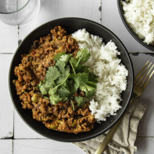

Home
How to make Cuban Picadillo Bowls

What is a Cuban Picadillo Bowl
If your looking for a simple, yet super flavorful high protein recipe with ground beef, look no further
than these Cuban Picadillo Bowls. You throw everything into one pan and in less than an hour, you have an
incredibly rich dish thats ideal for lunch meal prep or a tasty and simple dinner.
Ingredients
- 1 tbsp avocado oil
- 1/2 onion, finely diced
- 1 green bell pepper, finely diced
- 1 lb ground beef
- 2 cloves garlic, minced
- 1 1/2 tsp paprika
- 1 tsp dried oregano
- 1/2 tsp cumin
- salt and pepper to taste
- 1/4 cup dry white wine
- 2 tbsp tomato paste
- 15 oz can crushed tomatoes
- 1/2 cup golden raisins
- 1/2 cup green olives, sliced
- 2 tsp chopped capers
- steamed rice or cauliflower rice, to serve
- fresh cilantro, chopped, to serve
Steps
- Heat a large skillet over medium heat and add the oil. Once the oil is heated, add the diced onion and
bell pepper. Sauté until mostly tender, stirring occasionally, about 5 minutes.
- Add the ground beef and cook, stirring and breaking up the meat, until mostly cooked, about 5-7 minutes.
Stir in the garlic, spices and a pinch of salt and pepper.
- Stir in the crushed tomatoes, raisins, olives, and capers. Let simmer, stirring occasionally, until
thickened, about 10 minutes.
- Serve hot over rice with chopped cilantro if desired.
Recipe Source